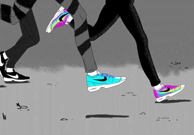
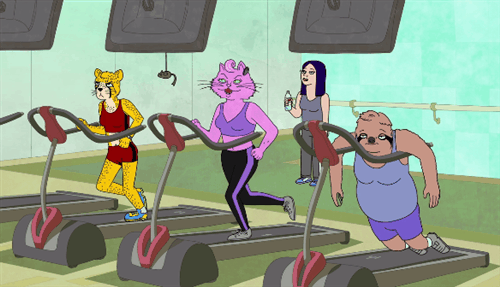

About this site:
When I first moved to Leeds, I found it hard to know where to go running. Hopefully, this site will give you some kind of an idea of where's good and safe to run. Most of the runs will start around the University of Leeds/Woodhouse Moor area, but feel free to adapt them so they suit where you live.
 